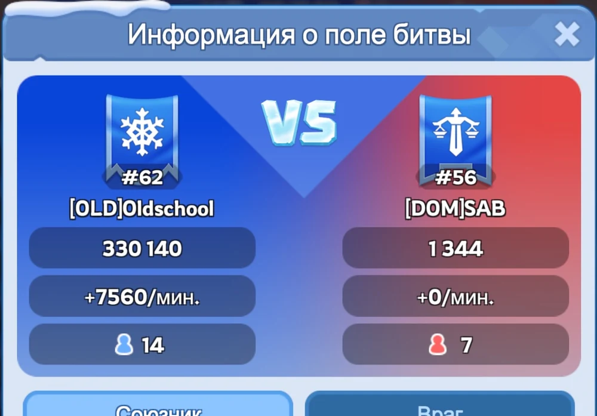
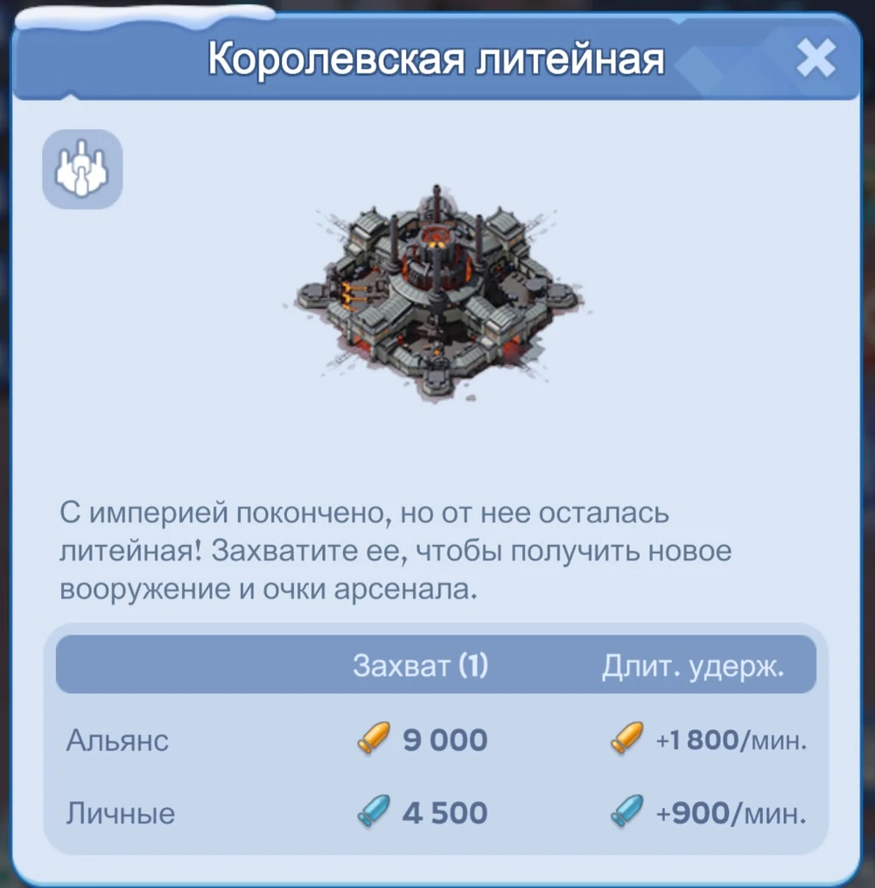
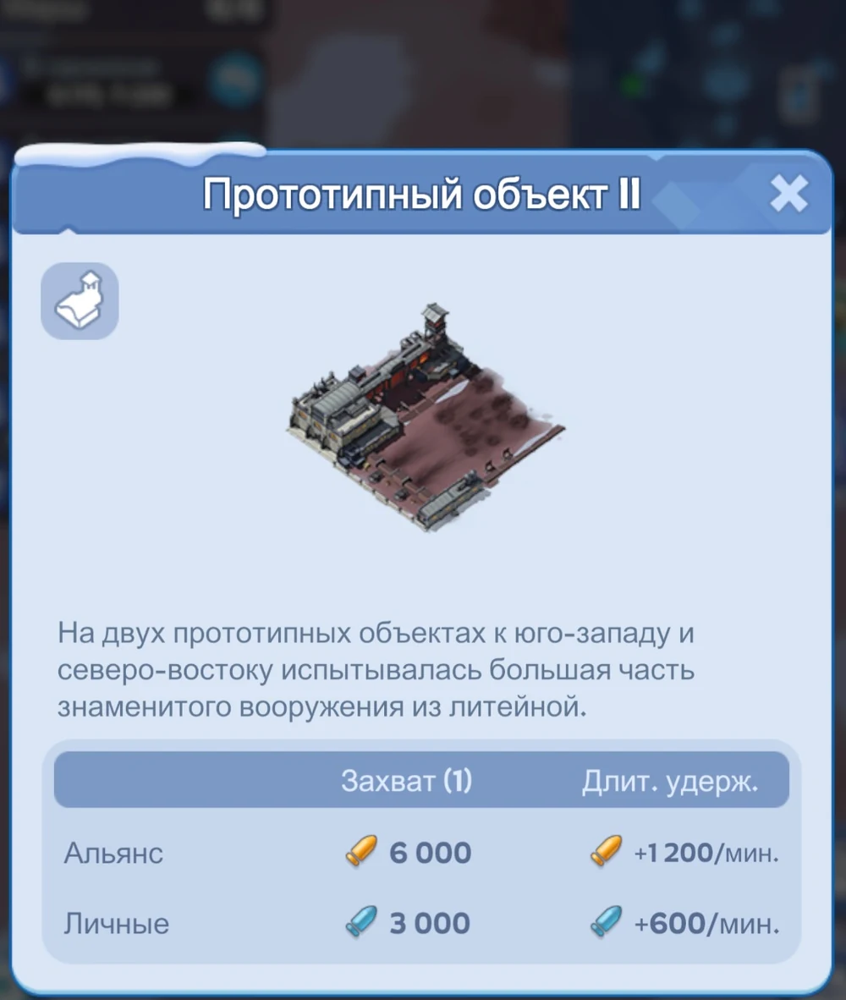
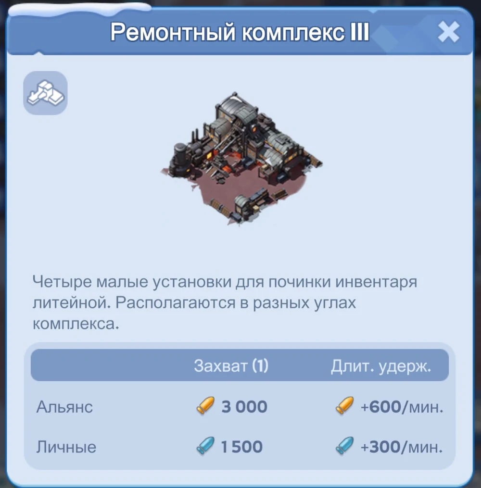
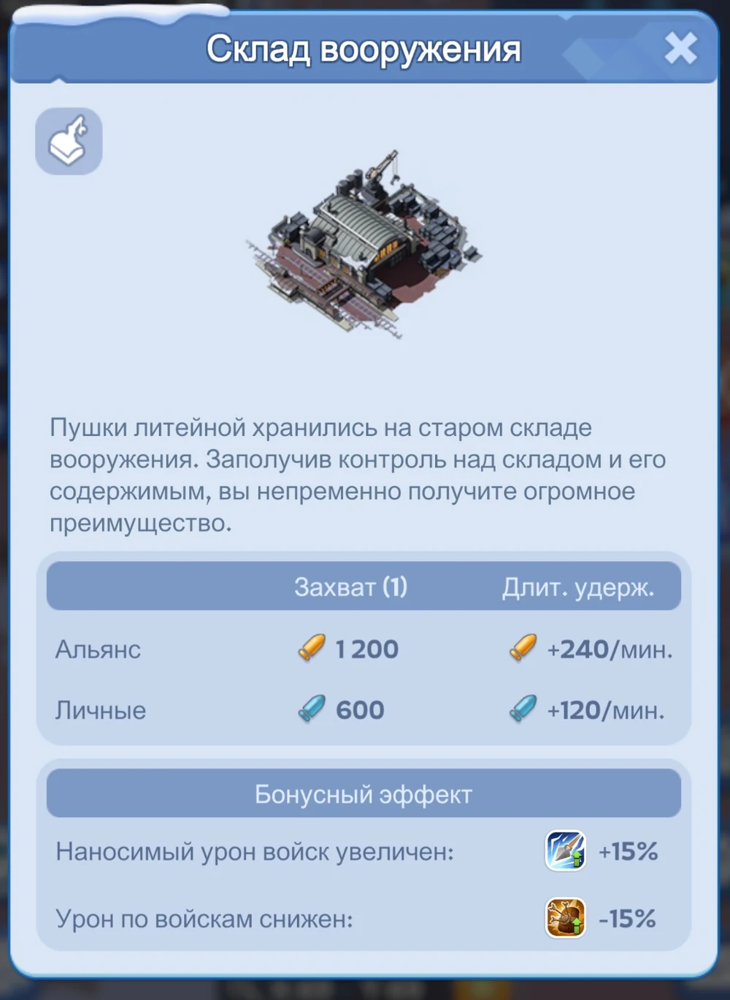
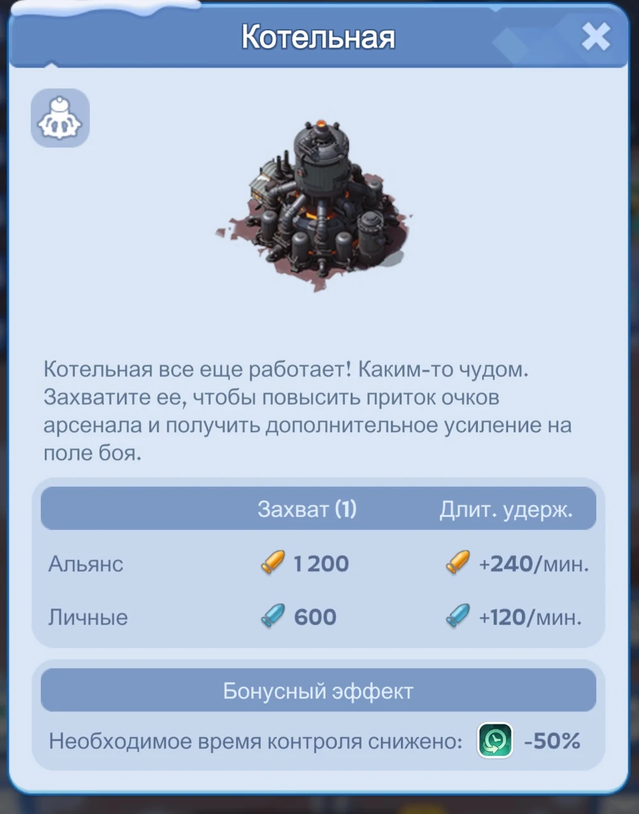
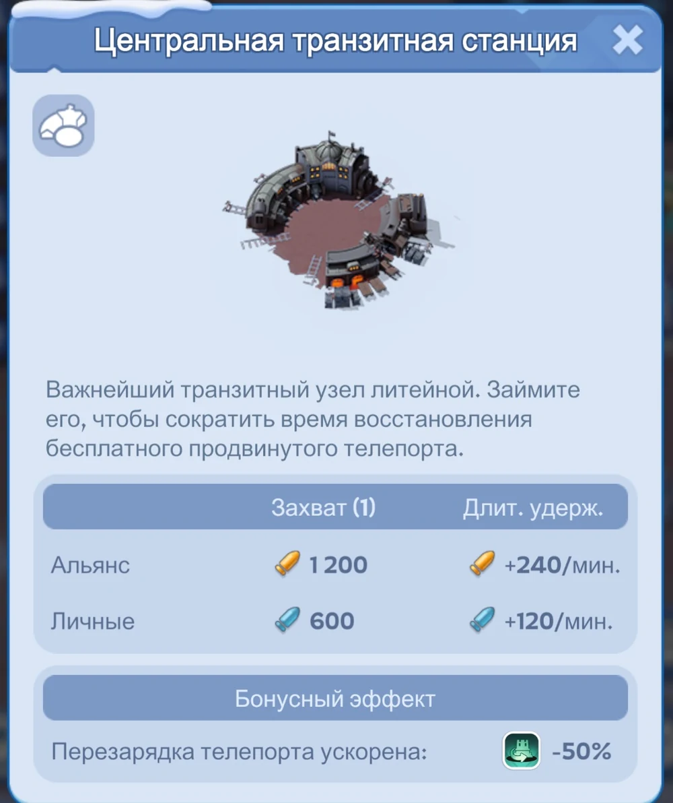
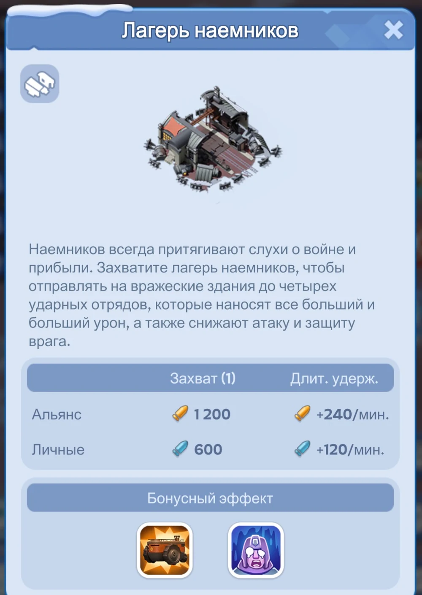
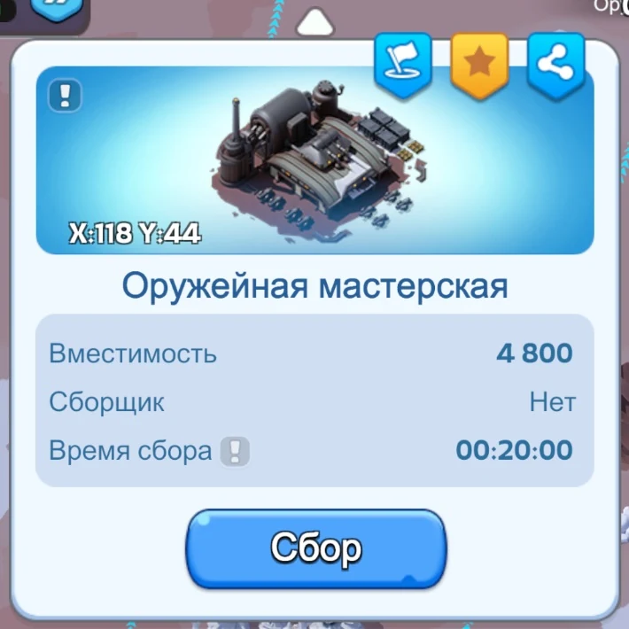
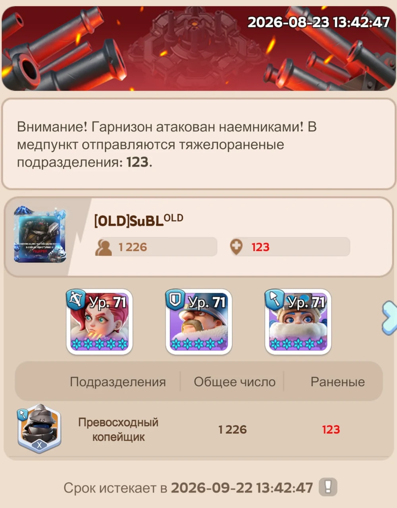

1. До входа: две формации и чистый город
| Формация | Состав и назначение |
|---|---|
| АТК | Джесси первой + 2 любых героя. Войска 50/20/30. Для присоединения к атакующим ралли. |
| ЗАЩ | Патрик первым + 2 любых героя. Войска 50/20/30. Для гарнизонов и обороны. |
- Первый экспедиционный навык Джесси и Патрика желательно иметь минимум 3 уровня, лучше выше.
- Перед входом не должно быть маршей вне города, раненых в обычном лазарете, горящей баррикады и чужих подкреплений в Посольстве — иначе игра может не пустить на поле боя.
2. Очки объектов: личные и командные
Каждый стационарный объект даёт разовые очки за захват и пассивные очки за удержание. Личные значения составляют половину командных.
| Объект | Команда / захват | Команда / удерж. | Личные / захват | Личные / удерж. |
|---|---|---|---|---|
| Королевская литейная | 9 000 | 1 800/мин | 4 500 | 900/мин |
| Прототипный объект ×2 | 6 000 | 1 200/мин | 3 000 | 600/мин |
| Ремонтный комплекс ×4 | 3 000 | 600/мин | 1 500 | 300/мин |
| Склад вооружения | 1 200 | 240/мин | 600 | 120/мин |
| Лагерь наёмников | 1 200 | 240/мин | 600 | 120/мин |
| Котельная | 1 200 | 240/мин | 600 | 120/мин |
| Транзитная станция | 1 200 | 240/мин | 600 | 120/мин |

При потере здания часть накопленных временных очков может рассыпаться рядом в виде припасов Арсенала. Их может подобрать любая сторона, поэтому после смены владельца объекта важно сразу проверять пространство вокруг него.
3. AFK-фарм личных очков: куда ставить марши
Для AFK-фарма важен прежде всего пассив за удержание. По личным очкам в минуту порядок простой:
| Приоритет | Объект | Личные очки/мин |
|---|---|---|
| 1 | Королевская литейная | 900 |
| 2 | Прототипный объект | 600 |
| 3 | Ремонтный комплекс | 300 |
| 4 | Служебные объекты | 120 |
- Это идеальная схема при непрерывном контроле объектов. Реальный результат ниже из-за переходов, выбивания гарнизонов и смены владельца.
- Если центр постоянно отбивают, безопасное удержание Прототипов и Ремонтников может быть выгоднее по фактическому аптайму.
- Слабый игрок может приносить много пользы, занимая свободные места в гарнизонах объектов с высоким пассивным доходом, пока сильные марши команды ведут активный бой.
4. Карточки главных очковых объектов
Для личного пассивного фарма центральные и ремонтные объекты выгоднее служебных.



5. Почему «боевые» объекты дают мало пассивных очков
У Склада вооружения, Котельной, Транзита и Лагеря наёмников всего 120 личных очков/мин. Их ценность — не в личном фарме, а в бонусе для всей команды.
| Объект | Личные/мин | Почему всё равно важен |
|---|---|---|
| Склад вооружения | 120 | Урон войск +15%; получаемый урон −15%. |
| Котельная | 120 | Необходимое время контроля объекта −50%. |
| Транзитная станция | 120 | Перезарядка бесплатного продвинутого телепорта −50%. |
| Лагерь наёмников | 120 | Позволяет отправлять до 4 ударных отрядов по вражеским зданиям; волны усиливаются и ослабляют атаку/защиту врага. |




6. Оружейные мастерские: что выгоднее «копать»
Оружейная мастерская имеет вместимость 4 800 и время сбора 20:00. Это даёт ориентир 240 очков Арсенала в минуту непрерывного сбора одной полной плитки.

- Плитки особенно полезны для свободных маршей: они дают очки без необходимости штурмовать или удерживать стационарный объект.
- Если хороший очковый объект уже занят союзниками, свободный марш лучше отправить собирать 4 800, чем держать его без дела.
- При равной безопасности приоритет для AFK остаётся за гарнизоном Литейной / Прототипа / Ремонтника; мастерские — способ монетизировать лишние марши и паузы между боями.
7. Наёмники: зачем они нужны против Литейной
Лагерь наёмников — не источник высокого пассивного дохода, а инструмент давления. После его захвата можно отправлять по занятым врагом зданиям до четырёх ударных отрядов. Новые волны наносят всё больше урона и одновременно снижают атаку и защиту противника.

- Один зафиксированный удар дал 123 тяжелораненых из 1 226 — примерно 10%. Это пример конкретной атаки, а не универсальная формула для всех волн.
- Главная задача наёмников — размягчить сильный гарнизон перед вашей атакой или ралли.
- Особенно логично использовать их против центральной Литейной или другого объекта, который противник держит плотным гарнизоном.
- Сам Лагерь даёт только 120 личных/мин, но его влияние может помочь отобрать объект, приносящий 600–900 личных/мин и значительно больше командных.
8. Телепорты, движение, очки за бой и лечение
- Транзитная станция сокращает восстановление бесплатного продвинутого телепорта на 50% — это напрямую повышает мобильность команды.
- Не телепортируйтесь к объекту без плана выхода и без понимания, кто вас прикроет.
- Событийные ускорения марша и телепорты тратьте ради захвата, подкрепления или выхода из фокуса, а не просто ради скорости.
- Войска на Литейной не погибают и восстанавливаются после завершения боя. Поэтому универсальные и лечебные ускорения — командное стратегическое решение, а не обязательная трата.
9. Короткий план матча
1. На старте быстро занимайте доступные внешние объекты и не ждите ралли для пустых целей.
2. Сильные марши — в активную атаку: атакующий получает в 2 раза больше личных очков за побеждённого противника, чем защитник. Остальные марши — в гарнизоны лучших доступных объектов для пассивного набора очков.
3. Для пассивного фарма приоритет: Литейная → Прототипы → Ремонтники → служебные объекты.
4. Свободные марши направляйте в Оружейные мастерские, если они не нужны для более прибыльного или критического гарнизона.
5. Склад, Котельную, Транзит и Лагерь наёмников оценивайте по командному эффекту, а не по их 120 личным очкам/мин.
6. Наёмниками ослабляйте плотные вражеские гарнизоны перед атакой.
7. После смены владельца объекта подбирайте выпавшие припасы Арсенала и не отдавайте их противнику.
8. Телепорты, лечение и ускорения тратьте только там, где они реально меняют результат боя.